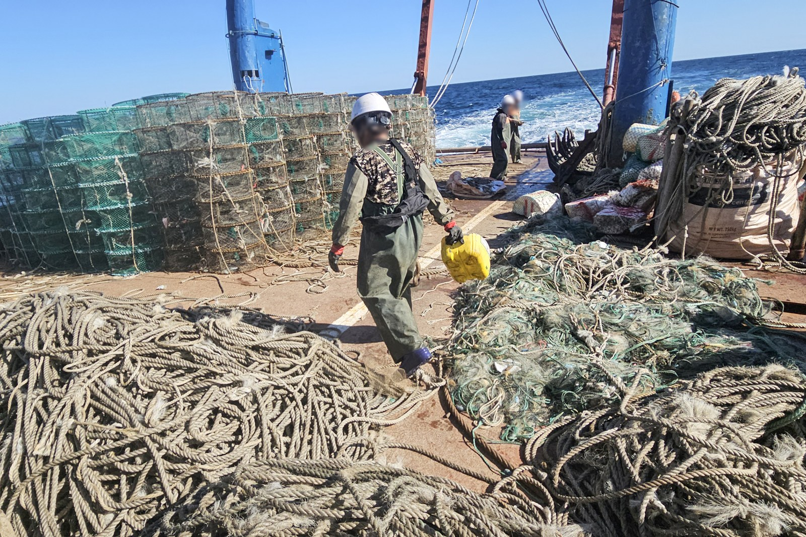
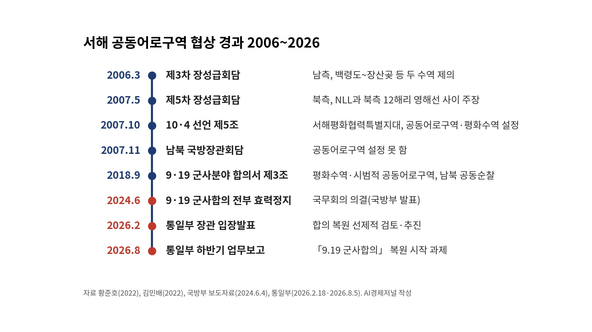
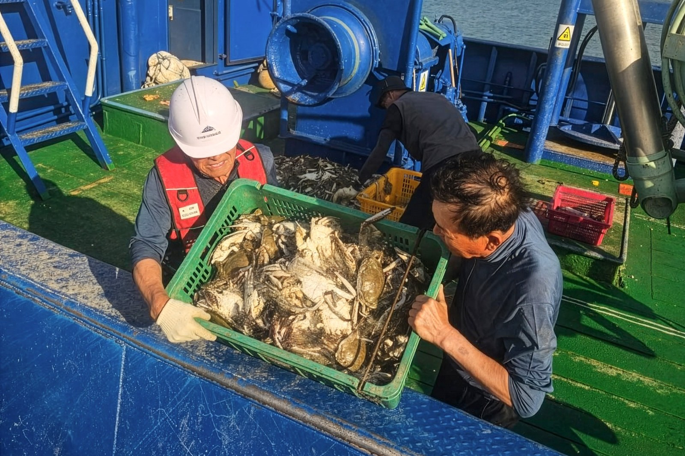

[해양경계] 서해 공동어로구역 19년, 논문 넷이 짚은 기준선·제재·국내정치
NLL과 경비계선 사이, 등면적 원칙 아래 갈린 기준선
백령도~장산곶 시범구역 합의와 2024년 효력정지
AI경제저널=김갑봉 기자 | 통일부는 지난 8월 5일 「9.19 군사합의」 복원 시작을 과제로 올렸다. 이 합의서 제3조에는 서해 평화수역과 시범적 공동어로구역을 설정한다는 약속이 들어 있다.
해양수산부 2024년 3월 8일 보도자료에 적힌 서해5도 어장 현황은 1854.86㎢다. 해수부는 같은 해 5월 16일 자료에서 4월 1일 어장을 169㎢ 늘렸다고 밝혔다. E어장 144㎢를 새로 두고 연평어장을 25㎢ 넓혔다.
중부지방해양경찰청 서해5도특별경비단은 지난 10월 13일 NLL 인근 해역 불법어망 제거사업의 첫 달 실적을 밝혔다. 9월 한 달 동안 작업 선박이 불법 외국어선의 어망 43km와 통발 4000여 개를 걷었다. 어망을 걷어 내며 확보한 꽃게 등 불법어획물 약 7000kg은 현지에 방류했다.
김민배 인하대 법학전문대학원 교수는 『통일과 법률』 49호(2022년)에 서해5도 주민의 권리 제약을 짚었다. 조업한계선과 특정수역, 선박 운항 제약 탓에 조업권과 이동권이 묶여 있다고 그는 썼다.
그는 평화수역과 공동어로구역 설정이 남북 충돌과 중국 어선 불법조업을 막는 데 필요하다고 본다. 공동어로구역은 2007년 10·4 선언에 담겼고 19년이 흘렀다.
2020~2022년 국내 학술지에 실린 논문 네 편은 그 쟁점을 나눠 다룬다. 기준선과 정상회담 뒤 협상, 국내정치, 유엔 대북제재다.
같은 약속 두 번, 2007년과 2018년

10·4 선언 제5조는 해주지역과 주변해역을 포괄하는 서해평화협력특별지대를 두기로 했다. 공동어로구역과 평화수역 설정이 그 첫머리다.
제3조는 공동어로수역 지정을 협의할 국방장관회담을 11월에 열기로 했다. 강무현 당시 해양수산부 장관은 2007년 10월 12일 라디오 인터뷰에서 전망을 내놨다.
공동어로수역이 지정되면 서해5도 어민의 조업지역이 2.5배 정도 넓어진다는 것이다. 그는 구체적 위치로 백령도와 연평도 사이를 검토하고 있다고 말했다.
2018년 9월 19일 군사분야 합의서 제3조는 같은 약속을 다시 담았다. 남북은 평화수역과 시범적 공동어로구역을 설정하고, 불법어로를 막으려고 공동순찰을 하기로 했다.
NLL과 경비계선, 등면적 아래 갈린 기준선

황준호 북한학 박사는 『현대북한연구』 25권 3호(2022년)에서 노무현 정부의 장성급회담을 분석한다. 2006년 3월 제3차 회담에서 남측은 백령도~장산곶 사이 등 두 수역을 제의했다.
두 수역 모두 가운데쯤으로 NLL이 지난다. 2007년 5월 제5차 회담에서 북측은 NLL과 북측 12해리 영해선 사이를 내세웠다.
7월 제6차 회담에서 남측은 NLL 기준을, 북측은 NLL 이남을 고수했다. 황준호는 구역을 정하려던 회담이 해상경계선 논쟁으로 흘렀다고 분석한다.
김민배는 남북이 등면적을 수역 설정 원칙으로 삼는 데는 합의했다고 쓴다. 쟁점은 면적을 재는 기준선이다. 김민배에 따르면 남한은 NLL을, 북한은 NLL보다 남쪽의 경비계선을 기준선으로 삼아 각각 등면적 구역을 제시했다.
황준호는 2007년 10월 정상회담 때 노무현 대통령이 김정일 국방위원장에게 건넨 자료를 짚는다.
그 지도에는 NLL 기준 등면적 공동어로구역 네 곳이 표기돼 있었다. 북측이 일관되게 거부해 온 안이라고 그는 쓴다.
정상 합의 뒤 2007년 11월 국방장관회담
남북 국방장관회담은 2007년 11월 27~29일 열렸다. 공동어로구역은 정하지 못했다. 황준호에 따르면 사전 실무회담부터 막혔다.
북측이 서해 경계선 재설정을 의제로 요구해 의제를 합의하지 못했다. 황준호는 김장수 당시 국방장관이 NLL 인정·존중을 전제조건처럼 내세웠다고 분석한다.
그는 두 정상이 서해평화협력특별지대라는 간판에는 합의했지만 실질 합의는 없었다고 본다. 군 일부와 보수 야당·언론은 정부가 NLL을 포기하려 한다고 주장했다.
이 주장이 여론의 지지를 얻어 정부의 운신 폭이 좁아졌다는 것이 황준호의 분석이다.
조업과 교역 사이, 유엔 대북제재 검토

이세련 전북대 법학전문대학원 교수는 『동북아법연구』 14권 2호(2020년)에서 제재 저촉 여부를 검토한다. 그는 구역 설정 자체는 제재 적용대상이 아니라고 분석한다.
다만 북한이 잡은 해산물을 수출하면 합의한 한국의 책임 문제가 생길 수 있다고 그는 적는다. 유엔 대북제재위원회의 인도적 면제 승인은 2020년 8월 기준 26건이었다.
대부분 보건·의료 지원이다. 이세련은 인도적 목적의 식량 지원을 근거로 면제를 주장할 수 있다고 본다. 그가 꼽는 가장 이상적인 길은 안보리 대북제재 완화다.
박언경 경희대 미래인재센터 객원교수는 같은 학술지 16권 3호(2022년)에 후속 검토를 실었다. 그는 구역 설정과 북한 선박의 조업 자체는 제재에 저촉된다고 보기 어렵다고 쓴다.
해산물 교역 사업은 제재에 저촉된다고 그는 짚는다. 유상입어수역은 입어료를 누가 내느냐에 따라 갈린다.
남한이 북한에 입어료를 내면 조업권 구입으로 해석될 수 있다. 박언경은 이 방식이 제재 완화 전에는 실행이 불가능하다고 쓴다. 북한이 남한에 내는 방식은 저촉되지 않는다고 본다.
2024년 효력정지와 2026년 복원 과제
김민배는 2018년 남북이 시범 공동어로구역을 백령도와 장산곶 사이에 두는 데 동의했다고 쓴다. 구체 경계선은 남북군사공동위원회 과제로 남았다.
그는 국제 판례의 3단계 획정 방식과 공동관리기관 설치를 대안으로 제시한다. 남북군사공동위원회는 2018년 합의서 제5조가 구성과 운영을 협의하기로 한 기구다.
조창래 국방부 국방정책실장은 2024년 6월 4일 9·19 군사합의 전부효력정지를 발표했다. 국무회의 의결과 대통령 재가를 거친 결정이다.
정동영 통일부 장관은 2026년 2월 18일 기존 합의의 복원을 선제적으로 검토·추진하겠다고 밝혔다. 그가 예로 든 것은 비행금지구역 설정이다.
통일부 하반기 업무보고는 「9.19 군사합의」 복원 시작과 DMZ 평화적 이용을 함께 적었고, 접경지역 지원 계획도 담았다.
참고문헌
- 「판문점선언 이행을 위한 군사분야 합의서」, 2018.9.19, 정책브리핑 「9·19 남북군사합의」, https://www.korea.kr/special/policyCurationView.do?newsId=148865808
- "9·19 남북군사합의 전부효력정지", 국방부 부처 브리핑(조창래 국방정책실장), 2024.6.4, https://www.korea.kr/briefing/policyBriefingView.do?newsId=156634219
- "통일부장관 현안 입장발표", 통일부, 2026.2.18, https://www.korea.kr/briefing/policyBriefingView.do?newsId=156744943
- "통일부, 2026년 하반기 업무보고 실시", 통일부 보도자료, 2026.8.5, https://unikorea.go.kr/web/unikorea/bbs/bbs_0000000000000004/59760
- "남북 공동어로땐 서해5도 어장 2.5배 확장", 해양수산부 부처 브리핑, 2007.10.12, https://www.korea.kr/briefing/policyBriefingView.do?newsId=148638394
- "서해5도, 여의도 60배 어장 확대로 어업인 소득 증대와 민생안정 기여", 해양수산부 보도자료, 2024.3.8, https://www.mof.go.kr/doc/ko/selectDoc.do?docSeq=55996&bbsSeq=10&menuSeq=971
- "(동정) 확대된 서해5도 어장 둘러보고 현지 어업인 의견 청취", 해양수산부 보도자료, 2024.5.16, https://www.mof.go.kr/doc/ko/selectDoc.do?docSeq=57011&bbsSeq=10&menuSeq=971
- "바다 속 불법어망 43km 제거...서특단, 사업 첫 달 성과 확인", 중부지방해양경찰청 서해5도특별경비단 보도자료, 2026.10.13, https://www.kcg.go.kr/seohae5docgs/na/ntt/selectNttInfo.do?nttSn=72662
- 김민배(2022), 「서해 5도의 남북공동어로구역 설정을 위한 기준과 과제」, 『통일과 법률』 49, 3-37, https://doi.org/10.36514/unilaw.2022..49.3
- 황준호(2022), 「미완의 서해 평화, 노무현 정부의 공동어로구역 협상」, 『현대북한연구』 25(3), 54-91, http://dx.doi.org/10.17321/rnks.2022.25.3.002
- 이세련(2020), 「서해평화협력지대 구상과 UN 제재: 공동어로구역 설정과 UN 대북제재와의 저촉 가능성에 대한 검토」, 『동북아법연구』 14(2), 29-52, http://dx.doi.org/10.19035/nal.2020.14.2.2
- 박언경(2022), 「대북 경제제재 국면에서의 공동어로구역 추진방안」, 『동북아법연구』 16(3), 169-190, http://dx.doi.org/10.19035/nal.2022.16.3.8
[사진 출처]
- [사진 1]·[사진 2] 해양경찰청(공공누리 제1유형, 중부지방해양경찰청 서해5도특별경비단 2026.10.13 보도자료)
- [도표 1] AI경제저널 작성. 자료 황준호(2022), 김민배(2022), 정책브리핑(국방부·통일부), 통일부 보도자료
※ 이 기사는 인공지능기자 위민아이(Wemin_AI)와 협력해 작성했습니다.
관련기사
- 서해5도특별경비단이 말하는 NLL 이남 영해의 허구
- [어민·수산] 44년 만에 열린 인천 연안 밤바다, 서해5도는 일몰 후 30분
- [해양경계] 한중 해양경계 16차 회담, 서해5도 앞에서 멈춘 세 경계선
저작권자 © AI경제저널 무단전재 및 재배포, AI학습 및 활용 금지